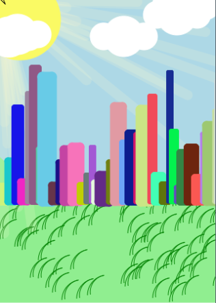
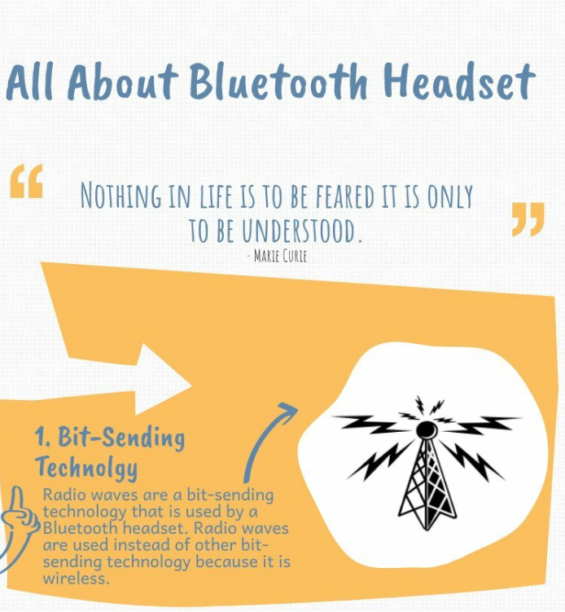
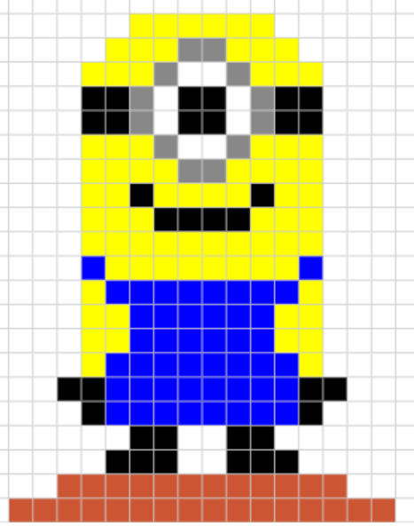

Junior Year
Juniors learn how the internet works and what is happenning "under the hood" of the programming languages we have beeen learning. Juniors learn about internet safety and how all the internet protocols work to keep our data safe. You will learn more about Java Script using Applab and make apps of your own that you can load on your phone. This is the AP Principles class, which means you will be taking a test at the end of the year to earn college credit.
| Changing Scenery | Bluetooth Research | Clicker Game | GIF vs PNG | student made color image |
|---|---|---|---|---|
|  |  |  |
 |
 |
| Group project by Isaiah, Jaden, Ojani and Angel in 2019 | By Benda Sanchez in 2019 | By Brenda Sanchez in 2019 | by Angel Herrera in 2019 | by Edgar Amaro in 2019 |
| The scene changes each time the program is run. Each team member made a different feature. Programmed using Java Script in AppLab | Research project on commonly used communication systems | Clicker game, find the blue button 10 times to win. Programmed using JAva Script in AppLab | Research project of GIF vs PNG file formats | Student designed color image using hex code |
| Check out the scene here | Look at the full report here | Play the clicker game here | Look at the full report here | Each pixel had to be assigned individually for a creation of the students choice |